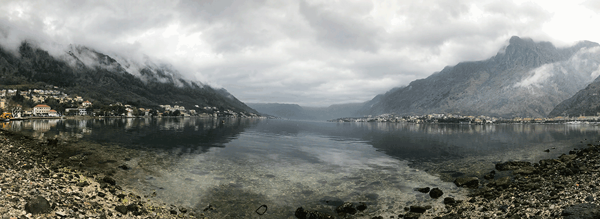
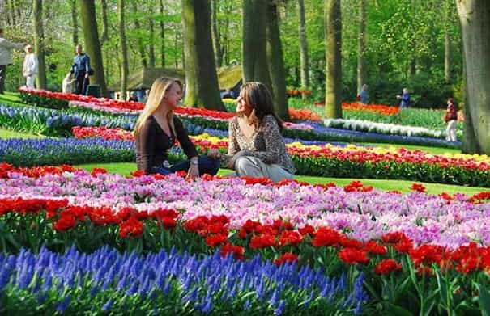
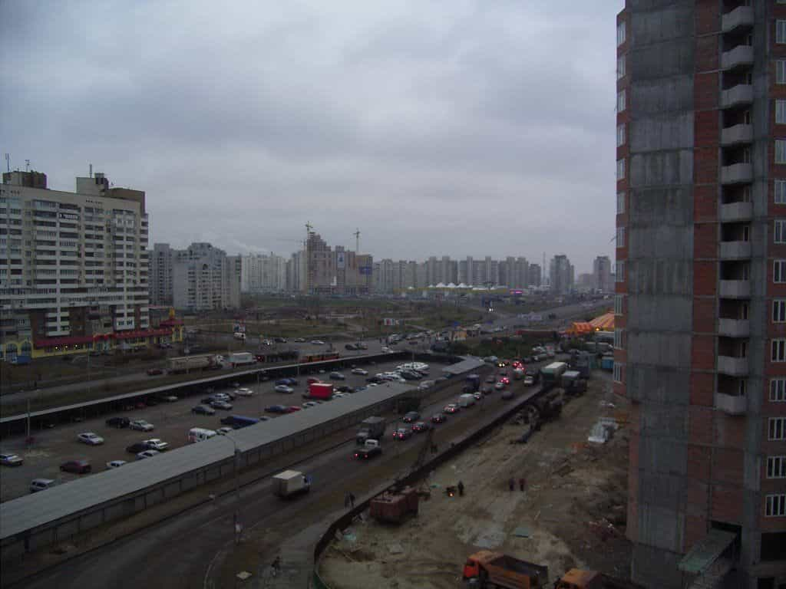

Kyle is an entrepreneur and nomad who has been living abroad since 2016. He blogs at This Is Trouble. Follow him on Facebook.


I recently spent some time in Dubrovnik, Croatia, and I’m currently writing this from the shores of Montenegro. I needed a couple of places to hang out for about a month in Europe. I was hoping for not-frigid weather, a decent price, and a location I could relax and put the finishing touches on a book.
Well, I’m now ready to declare it a mistake.
While I was hoping for a relatively distraction-free experience, I didn’t anticipate being about the only one in town. While it’s easy for some of us nomads to complain about certain destinations being completely overrun with Western tourists during the peak travel months, the opposite isn’t all that great either. A lonely existance with almost no one to talk to, not much to do, and simply no excitement.
On the bright side, the place is truly beautiful.

With that being said, I’ve got a few tips I’d like to share that I’ve learned about traveling around Europe over the last year. You can apply this knowledge whether you’re taking vacations for pleasure, trying to meet foreign girls, or just want to see parts of the world.

Kind of obvious, but it’s really worth noting. Krakow, Poland was the biggest illustration of this to me. In April of 2016, it was fantastic. I came back in July, and I don’t think I saw a single local. All the university girls had run away from the hoards of tourists, back to their village. If you’re going to take a summer trip to run game, you should always look for the following criteria:
If you’re doing the vacation thing, you’re going at a time everyone else is going. Attractions will be swarmed, apartment prices will be inflated, and you’ll hardly feel like you escaped from your normal office job. You replace co-workers with other tourists, and you’ll just get fed up. This is exactly how members of my family felt this summer when they traveled around a bit.

Come spring time, people have been huddled inside all winter and are ready to go. In 2014 and 2015 I took shorter trips to Europe, and was amazed at how happy people seemed to be just to be outside. I’m seeing the same things here in Kotor. On days when it’s been sunny, people are out and about having a blast.
I’ve definitely come to the conclusion that from a game perspective, spring is the time to be places in Europe. Clothes are being shed—huge coats are replaced with sun dresses. Everyone wants to drink and have a good time.

I spent August through October in Kiev, and the rest of the year in Prague. It’s definitely better to go during fall versus summer with everyone else, but fall to me has paled in comparison to spring. Rather than celebrating the sun, it’s starting to go away. Some of the cities take on a very drab, grey look when there’s nothing but clouds.
In some cases, it’s not so bad. Eastern European women are looking for someone to huddle up with for the winter, so if you’re somewhere longer-term, you’ll have no shortage of dates. For that reason, and because she’s getting far less offers from other foreigners passing through for a week.
The other bright side of fall is the return of universities to session, for obvious reasons.
For those of you who can stomach it, it could go either way. The tourists are gone, but it’s miserably cold. I had hoped that places like Dubrovnik and Kotor might make for some good “off season” homes, so to speak, because a place like Ukraine isn’t it. A place to escape to for a few weeks, or even a month. Where the weather would be “good enough”, enjoy some beautiful scenery, and maybe there would be some people out an about.
This European off season experiment was a shot in the dark, but after a few weeks here I’m pretty comfortable in saying that if you want to have “fun”, you should absolutely stay away from these types of places during the off season. At the same time, I’m hesitant to recommend them even for summer living. They’re so small, and I just know these beautiful Old Towns, so empty right now, are going to be taken over by drunk, stumbling stag parties in the near future.
The more I travel, the more I realize that you maybe can’t have it all. Of course, some people will argue:
But if you’re totally location independent, why not just hop around more?
I understand it, but that can get absolutely exhausting. Especially when you’re trying to run and build an online business, you need a bit of stability in your life. I know that I personally can’t get anything done if I’m not somewhere for at least a month. Anytime I take short trips for a week or so, I get nothing productive done.
I need know that *I* need the sort of stability of a monthly place, and a continent. And Europe is my favorite. I don’t want to have to go from Europe to South America (it’s still a 15-20 hour process to get from California to Colombia, for example) in December, and then head to Europe in February.
So maybe you can’t have it all, and that’s okay. I’ll wait out this month, and try another experiment in the future. One thing’s for sure though, I’d take this life over a cubicle.
If you want to learn how to break out the rat race, check out Troublesome Solutions to get started. Visit Eastern European Travel for more information about gallivanting around Europe.
Read More: 8 Things That Eastern Europe Girls Have Said To Me That Blew My Mind